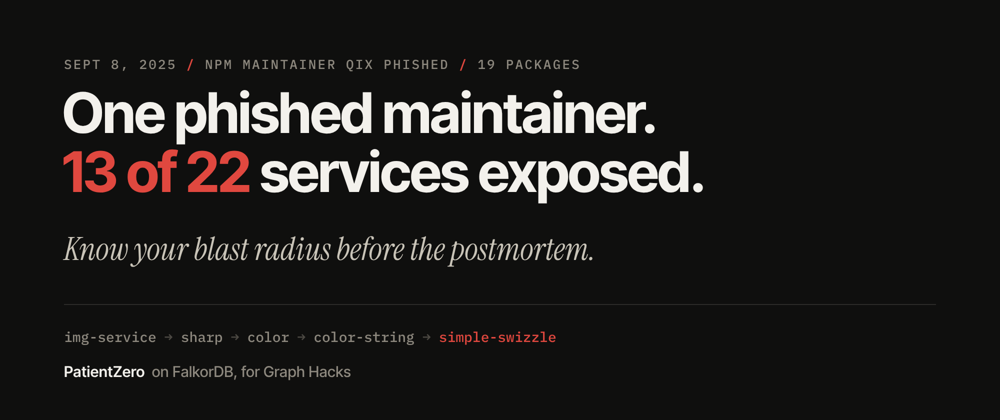
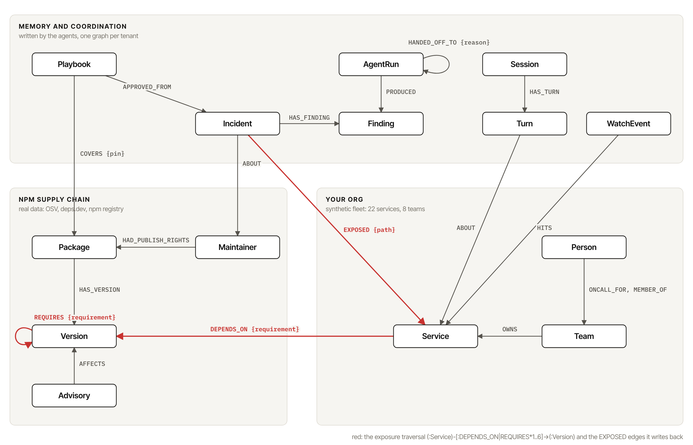
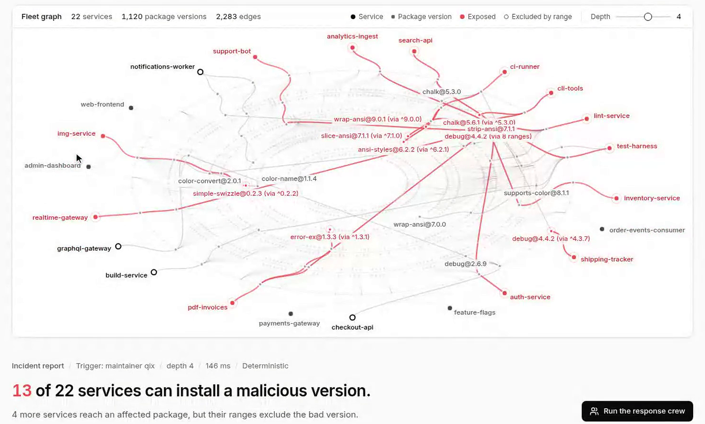
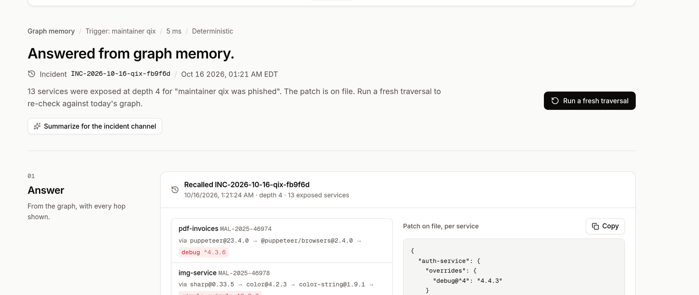
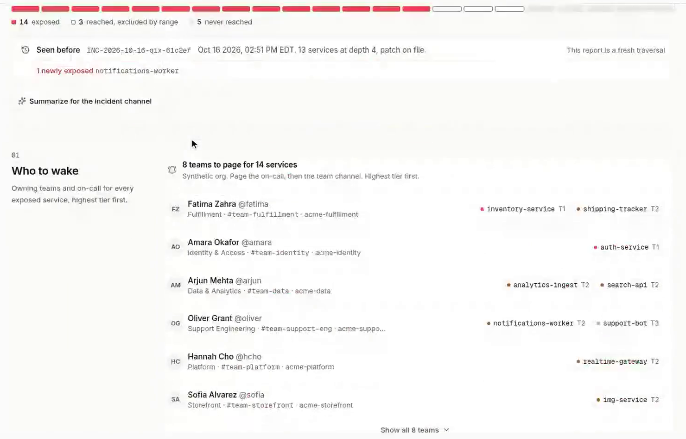
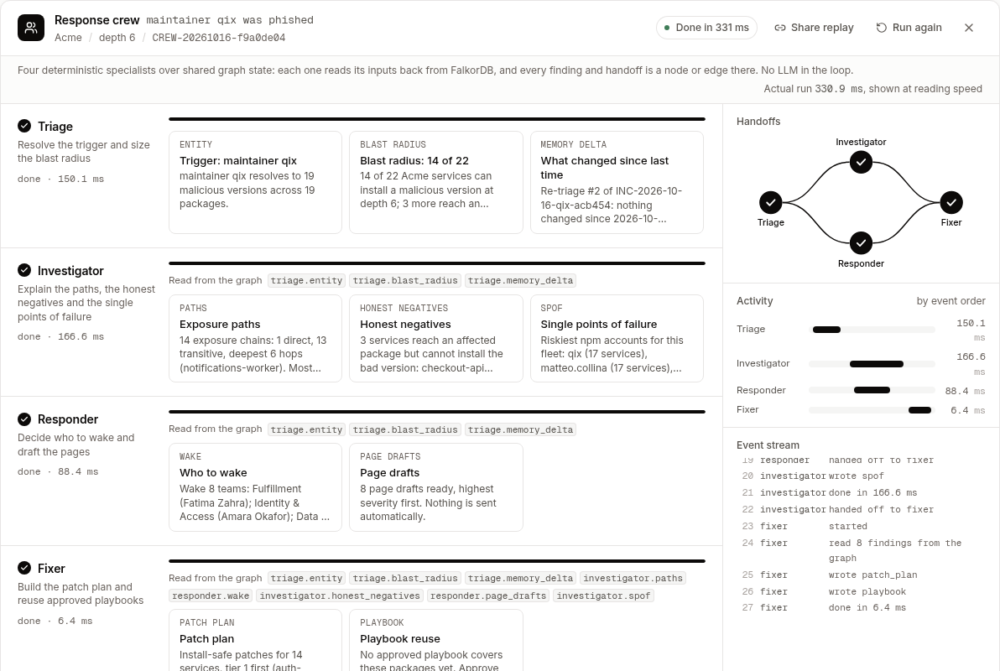
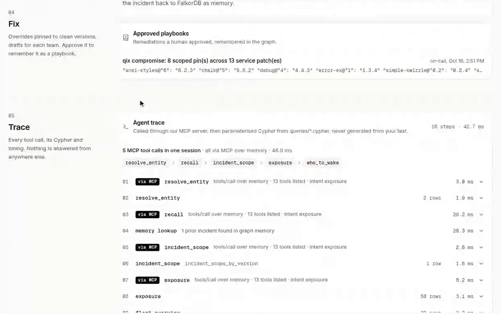
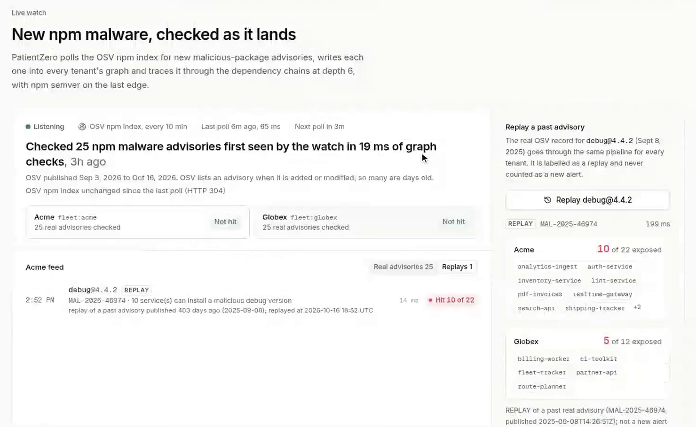
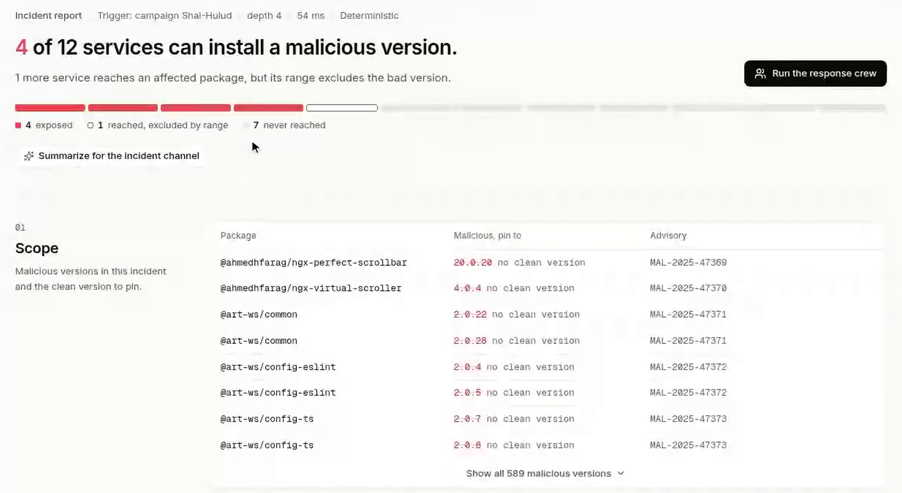

I replayed the September 2025 npm qix compromise against a dependency graph in FalkorDB. Variable-length Cypher, graph memory and a four-agent crew answer the 2 AM questions: are we hit, how bad is it, and who do I wake?
On September 8, 2025, one npm maintainer clicked a phishing link. Within hours, 19 of his packages, including debug and chalk, shipped malware, and those packages had been downloaded 2.71 billion times the week before.
If you ran a platform team that night, you didn't care about the payload. You had three questions: are we hit, how bad is it, and who do I wake up? I built PatientZero to answer all three in seconds, and to show its work.
TL;DR
- PatientZero replays the real npm "qix" compromise (and the Shai-Hulud worm a week later) against a fleet graph in FalkorDB.
- Exposure is a variable-length Cypher traversal plus an npm semver check on the last edge. On my 22-service test fleet: direct dependencies find 1 exposed service, four hops find 13.
- Incidents, approved playbooks, conversations and agent handoffs all live in the graph, so the agent remembers and can explain itself.
- Four agents hand off work through
HANDED_OFF_TOedges, the agent calls its tools through its own MCP server, and a live OSV watch checks new npm malware every 10 minutes.- Live demo: patientzero-production-2cb3.up.railway.app · Code: github.com/AtharvRaotole/PatientZero
Here is one real chain from the test fleet:
img-service → sharp → color → color-string → simple-swizzle
simple-swizzle was one of the 19 compromised packages. img-service never mentions it. You'd only find it four hops down, and only if you went looking.
That is the whole problem in one line. Exposure is transitive, so a list of direct dependencies lies to you. On my fleet, checking direct dependencies flags 1 of 22 services. Following chains up to four hops flags 13.
There's a second twist that took me a while to see. The malicious versions were unpublished within hours, so they never show up in anyone's resolved tree today. "Do we have debug@4.4.2 installed?" is the wrong question. The right one is: would a fresh install on September 8 have pulled it? That depends on the semver range declared on the last edge of the chain. ^4.3.4 admits 4.4.2. An exact pin on 2.6.9 doesn't.
A graph stores both things a lockfile scan can't easily join: the chain, and the range on every hop.

EXPOSED edges it writes back. Everything in the top panel is written by the agents.Three neighbourhoods share one graph:
Package, Version, Advisory and Maintainer, from OSV, GitHub advisories, deps.dev and the npm registry. REQUIRES edges keep the declared range as a requirement property.DEPENDS_ON real npm versions.Incident, Finding, Playbook, CrewRun, AgentRun, Session, Turn and WatchEvent. Nothing the agent knows lives in Python memory.This is the main query, from queries/exposure.cypher with a few output columns trimmed:
MATCH p = (s:Service)-[:DEPENDS_ON|REQUIRES*1..6]->(v:Version)
WHERE v.pkg IN $pkgs AND length(p) <= $depth
WITH s, p, v, last(relationships(p)) AS r
RETURN s.name AS service, v.pkg AS pkg, r.requirement AS requirement,
length(p) AS hops, [n IN nodes(p) | n.name] AS via
ORDER BY service, hopsFalkorDB returns every candidate path from a service to any version of an affected package, with the range on the last hop. The app then runs real npm semver (nodesemver.satisfies) against the bad version. FalkorDB finds the paths and the app makes the semver call, and each does what it's good at.
One detail I learned the hard way: FalkorDB doesn't accept a parameter as a variable-length bound, so *1..$depth won't work. I fixed the pattern at *1..6 and filter with length(p) <= $depth. That filter drives the depth slider in the UI.

Drag the slider and the story changes: 1 of 22 at depth 1, 13 at depth 4, 14 at depth 6. The answer also reports honest negatives. checkout-api reaches debug through express@4.21.2, but the exact pin 2.6.9 excludes 4.4.2. At 2 AM, knowing why a service is safe saves you from waking a team you don't need.
Every incident question writes an (:Incident) with one EXPOSED {path} edge per exposed service. The next question gets a fresh traversal, with the remembered incident shown next to it ("Seen before", plus what changed since).
The recall query is where storing memory in a graph started to feel like a superpower:
MATCH (i:Incident)-[:ABOUT]->(n)
WHERE (n:Maintainer AND n.npm = $entity_key)
OR (n:Maintainer AND (n)-[:HAD_PUBLISH_RIGHTS]->(:Package)
-[:HAS_VERSION]->(:Version {key: $entity_key}))
OR (n:Maintainer AND (n)-[:HAD_PUBLISH_RIGHTS]->(:Package)
-[:HAS_VERSION]->(:Version)<-[:AFFECTS]-(:Advisory {id: $entity_key}))An incident filed about maintainer qix is recalled when someone later asks about debug@4.4.2, or about an advisory id, because memory is reached by traversal rather than string matching. In a new session, a bare qix is answered straight from memory, with the incident id and the patch on file.

Two more kinds of memory sit on top of that:
package.json patch per service (verified with real npm install). When a human clicks Approve, it becomes a (:Playbook) that COVERS {pin} each package. Later incidents on the same packages find it by traversal, and every reuse bumps uses_count, so the Fixer prefers the playbook that has worked most often.(:Turn) linked ABOUT the nodes it resolved to. So "and at depth 6?" reruns the last question deeper, and "who should I wake for that?" knows what "that" is.
Because sessions live in FalkorDB, they survive restarts and every agent can see them.
For Track 2, I wanted coordination you can actually inspect. The response crew is four deterministic specialists: Triage sizes the blast radius, Investigator explains paths and single points of failure, Responder decides who to page and drafts the messages, and Fixer builds the patch plan. Investigator and Responder run concurrently, so the handoffs form a real DAG.
No agent passes anything to another in Python. Each one writes findings with (:AgentRun)-[:PRODUCED]->(:Finding), and the next one reads them back by walking the handoff edges:
MATCH (src:AgentRun)-[:HANDED_OFF_TO*1..3]->(:AgentRun {id: $id})
WITH DISTINCT src
MATCH (src)-[:PRODUCED]->(f:Finding)
RETURN src.agent AS agent, f.kind AS kind, f.title AS title, f.data AS data
ORDER BY f.seqSince the whole run is nodes and edges, any run replays from the graph with a shareable ?run= link.

PatientZero ships an MCP server you can plug into Claude Desktop or Cursor. The agent itself is a client of that same server, over the official SDK's in-memory transport. Each intent runs its own chain of tools/calls on one shared session. An exposure question runs five: resolve_entity, recall, incident_scope, exposure, who_to_wake.

The deterministic router handles everything by default. With an OpenAI key, a model is consulted only when the router isn't confident, and even then it can only pick from the same tools. It never writes Cypher. Any name in its answer that isn't in the tool result gets the sentence rejected, and the templated answer is shown instead.
MCP isn't free. It costs about 1 ms of CPU per call, and locally that meant 77 req/s through the chain against 137 req/s with MCP_AGENT=off at 30 clients. I kept it on because routing through MCP is the point, and a parity test checks both paths give the same answers, field for field.
Every 10 minutes, PatientZero pulls new MAL-* npm advisories from OSV, writes them into every tenant's graph and runs the same traversal. Most polls end in "Not hit". A clearly labelled replay of the real debug@4.4.2 advisory shows what a hit looks like: Acme 10 of 22, Globex 5 of 12.

Multi-tenancy came almost for free with FalkorDB's multi-graph support: Acme is fleet:acme, Globex is fleet:globex, same schema, separate memory. The Shai-Hulud worm (203 packages, 589 malicious versions) is the best demo of this. Acme is not hit. Globex has 4 of 12 services exposed. Nothing Acme approved is ever recalled in Globex.

I measured two different things, and I'm giving you both on purpose:
| What | Result | Conditions |
|---|---|---|
| In-process database benchmark (live FalkorDB 4.22.1) | 740.6 ops/s, p50 36 ms, p99 112 ms, 0 errors | 30 clients for 20 s, no HTTP. 80% product reads, 20% synthetic writes into a scratch graph that's deleted afterwards, retry on busy |
| End to end over HTTP (live deploy) | 49.4 req/s, p99 1.15 s, 0 errors | 30 clients, read-only /api/ask and /api/fleet, one uvicorn process |
The gap is the story: FalkorDB is not the bottleneck, my single Python process is. The benchmark also caught a real bug. The first live HTTP run returned four 500s, and all four were FalkorDB Max pending queries exceeded rejections (MAX_QUEUED_QUERIES 25 on 2 threads). A rejected query never ran, so I added a retry with jittered backoff (safe even for writes) and raised the live queue to 200. The same 30-client run then finished with zero errors.
During testing, one innocent query panicked the whole FalkorDB 6.0.1 server. The cause is FalkorDB#3150: a RETURN that mixes an aggregate with two or more grouping keys crashes when a non-first key is null. who_to_wake hit it through Team nodes without a Slack channel.
The fix is to aggregate in WITH and only project in RETURN:
// crashes 6.0.1: MATCH (n:N) RETURN n.name AS x, n.missing AS a, count(n)
MATCH (t:Team)-[:OWNS]->(s:Service) WHERE s.name IN $services
OPTIONAL MATCH (oc:Person)-[:ONCALL_FOR]->(t)
WITH s, t, collect(DISTINCT {name: oc.name, handle: oc.handle}) AS oncall
RETURN s.name AS service, t.name AS team,
coalesce(t.slack, '#team-' + t.name) AS slack, oncallI rewrote seven queries this way, gave Team fields defaults at load time, and added a test that parses every .cypher file and fails the build if that shape comes back. The backend suite, 256 tests, passes on both FalkorDB 6.0.1 and 4.22.1, the version the live deploy runs.
REQUIRES edge is what made honest negatives possible. Without it, every reachable service looks exposed.HAD_PUBLISH_RIGHTS connects a question about debug@4.4.2 to an incident filed under qix, with no embeddings and no guessing./health probe took 22.7 seconds. Moving every crew graph call to a bounded thread pool and capping concurrent runs fixed it.The tradeoffs are real too. The Acme and Globex fleets are synthetic (the npm data is real), semver runs in the app rather than in the database, and bring-your-own-repo scans check the qix incident only.
Open the live app and type qix, debug@4.4.2, who to wake for auth-service or path from img-service to simple-swizzle. Then scroll to Would you have been hit on Sept 8, 2025? and paste a public repo. github.com/axios/axios comes back exposed through https-proxy-agent and debug@4.4.2.
The code, the 20 query files and the verification docs are at github.com/AtharvRaotole/PatientZero. If you scan your own repo and something lights up red, I'd love to hear about it.
Built for Graph Hacks: Context for AI Agents by WeMakeDevs and FalkorDB, entered in Track 1 (Agents That Act on Connected Data) and Track 2 (Agent Memory and Coordination). Disclosure: I wrote PatientZero with Cursor as my AI coding assistant, using AI agents for research, code, tests and review. I chose the problem and the design, reviewed every build, and every Cypher query is parameterised and checked by the test suite.